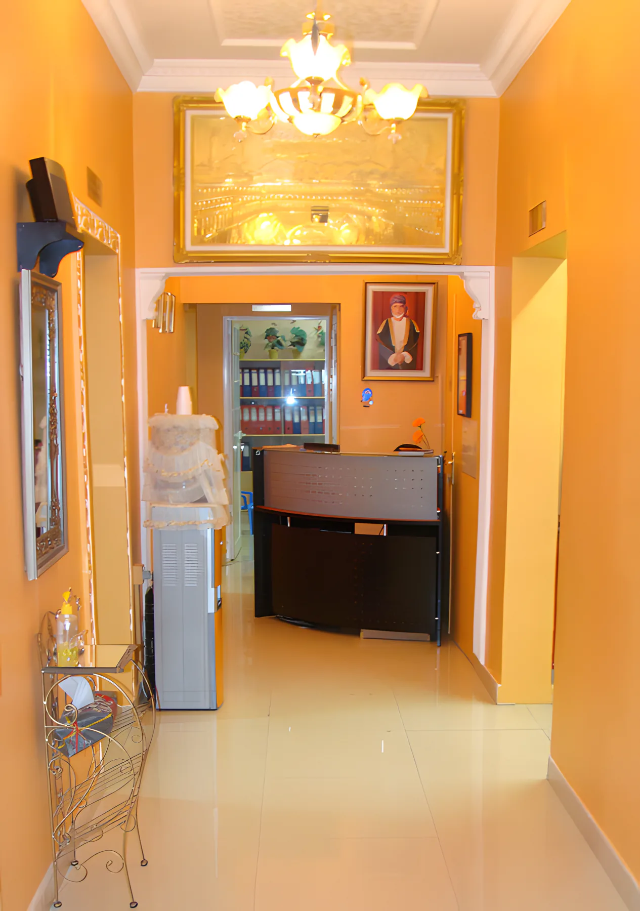
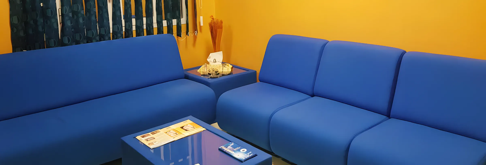
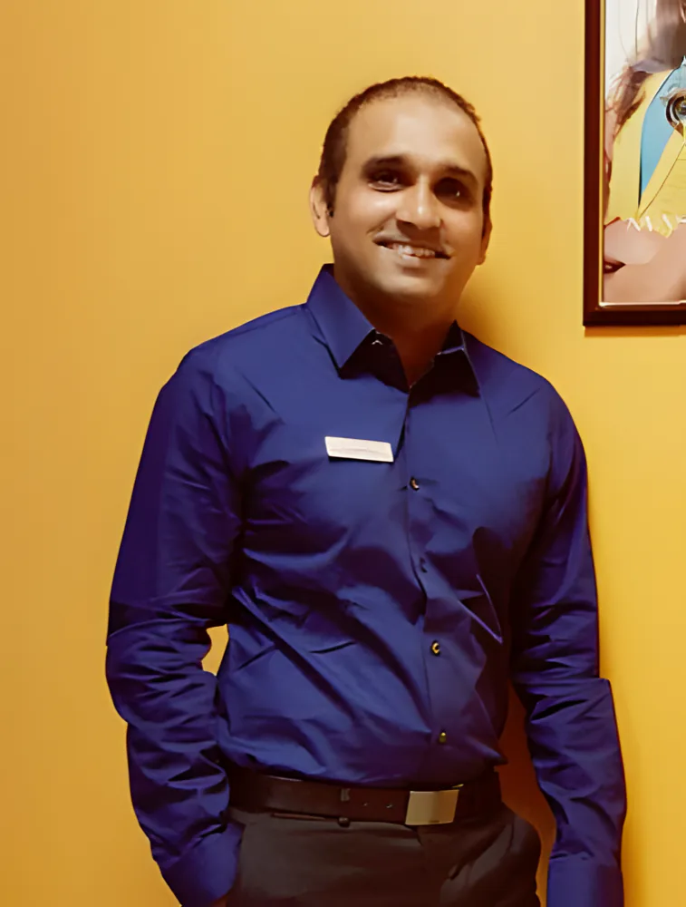

د. حفصة بانو عابد
المديرة، طب الأسنان العام والتجميلي
بكالوريوس جراحة الأسنان من كلية ينيبويا لطب الأسنان، الهند (2003). أسست العيادة عام 2010.
مقابل حديقة القرم الطبيعية، مسقط
سكة 1829، مبنى 2021، الطابق الأرضي · مواقف مخصصة لمرضانا
عيادة تخصصية للأسنان، القرمWhite Smile Dental Speciality
افتتحت الدكتورة حفصة بانو عابد هذه العيادة عام 2010 مقابل حديقة القرم الطبيعية. الفحص والحشوات وعلاج العصب والتيجان والفينير والتبييض والزراعة وعلاج اللثة والتقويم، كلها في مكان واحد.
مفتوح الآنالأحد–الخميس 8:30–12:30 و 4:30–8:30 · السبت مساءً



كثير من المرضى يأتوننا وعندهم خوف من عيادة الأسنان ومن العلاج. نتغلب على هذا الخوف بالحديث معك وشرح حالة أسنانك وطريقة العناية بها، حتى تعرف ما يحدث في كل خطوة. غرفة الانتظار هادئة، وعندنا مواقف مخصصة لمرضانا.
“I was too afraid and scared, since it is my first time I was getting my teeth cleaned professionally, but with Dr Hafsa, I really thank my god and her for making it very professionally without causing any pain and damage.”Mr. Abdullah, Omani patient

طب الأسنان العام والتجميلي مع الدكتورة حفصة، والتقويم مع أخصائي التقويم لدينا. اضغط على أي علاج لتعرف ما يشمله.

الدكتورة حفصة حاصلة على شهادة في Lumineers وتصاميم Cerinate.
مع الأستاذ الدكتور سانديب شيتي، أخصائي التقويم. التقسيط المريح متاح للتقويم.
في بعض الإجراءات بدون حفر وبدون تخدير، مع نزيف أقل وتعافٍ أسرع.
الزرعة تعوض جذر السن المفقود. نتابعك بعدها حتى تلتئم، عادة خلال شهر إلى أربعة أشهر.

المديرة، طب الأسنان العام والتجميلي
بكالوريوس جراحة الأسنان من كلية ينيبويا لطب الأسنان، الهند (2003). أسست العيادة عام 2010.

أخصائي تقويم الأسنان
ماجستير تقويم الأسنان وتقويم الوجه والفكين. حاصل على شهادة التقويم اللساني Incognito.
ومعهم شايني توماس، ممرضة الأسنان ومنسقة العلاج، وناهدة إبراهيم، مسؤولة علاقات المرضى.
Meet the team (English)من صفحة آراء المرضى في موقعنا، بكلماتهم كما كتبوها بالإنجليزية.
Dr Hafsa, I like her patience, very informative and thoroughly talks you through the treatment. You feel at ease!The clinic is high tech, I am impressed with the equipment. Dr Hafsa is very thorough with her work, checks each tooth. Great work.… She treated the problem with patience and in a professional manner, not in a commercial basis.Dr Hafsa has a hand that works like a lapidiary (diamond cutter) … The staff and attendants were very courteous and professional.سكة 1829، مبنى 2021، الطابق الأرضي، القرم، مسقط
مقابل حديقة القرم الطبيعية. المواقف مخصصة لمرضانا.
مفتوح الآن
| الأحد | 8:30 ص – 12:30 م4:30 م – 8:30 م |
|---|---|
| الإثنين | 8:30 ص – 12:30 م4:30 م – 8:30 م |
| الثلاثاء | 8:30 ص – 12:30 م4:30 م – 8:30 م |
| الأربعاء | 8:30 ص – 12:30 م4:30 م – 8:30 م |
| الخميس | 8:30 ص – 12:30 م4:30 م – 8:30 م |
| الجمعة | مغلق |
| السبت | 4:30 م – 8:30 م |
مقابل حديقة القرم الطبيعية